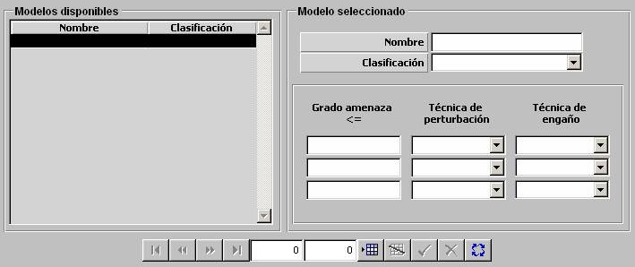

ECM Standard

Mediante la tabla de ECM estándar se especifican las contramedidas recomendadas en función del Grado de Amenaza de la emisión detectada cuando el ESM no dispone de datos de librería de emisiones, bien por no tener Capacidad de Identificación (ver apartado ESM) o bien porque los datos sean clasificados.
Grado de Amenaza <=: Este parámetro determina el valor de Grado de Amenaza de la emisión por debajo (o igual) del cual se recomienda la técnica de perturbación y / o engaño especificados en la fila correspondiente. El valor de Grado de Amenaza introducido en cada columna debe ser superior al de la columna anterior. Mediante las tres filas se podrán especificar tres intervalos disjuntos de Grado de Amenaza, con recomendaciones distintas.
Unidades: ---
Rango: 0 – 15
Técnica de Perturbación: Puede tomar los siguientes valores:
Técnica de Engaño: Puede tomar los siguientes valores: